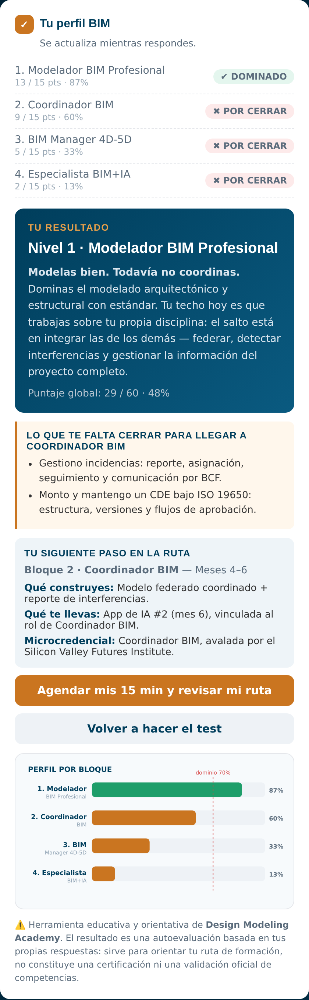

20 preguntas sobre lo que sabes hacer de verdad en un proyecto. Al terminar sabes si eres Modelador, Coordinador, BIM Manager 4D-5D o Especialista BIM+IA — y exactamente qué competencias te faltan para el siguiente nivel.
Déjanos tus datos y entras al test al instante.
Qué te llevas
La mayoría de los tests te dan una etiqueta bonita y ya. Este te dice dónde estás parado en una ruta real de 4 niveles, y qué competencia concreta te está frenando.
Modelador, Coordinador, BIM Manager 4D-5D o Especialista BIM+IA. Con la regla honesta: no se puede coordinar sin saber modelar.
Un gráfico con tu porcentaje en cada uno de los 4 bloques. Ves de un vistazo dónde estás fuerte y dónde tienes el hueco.
La lista exacta de las competencias que marcaste flojas en el bloque que te toca cerrar. Nada de "estudia más".
Qué bloque sigue, qué construyes en él, qué microcredencial obtienes y qué app de IA te llevas.
Contra qué te mides
Las mismas 4 microcredenciales del Máster Internacional BIM+IA, avaladas por el Silicon Valley Futures Institute. Cada una acredita una competencia profesional medible — no horas de asistencia.
Modelado arquitectónico y estructural multiplataforma con estándar: plantillas, familias paramétricas, LOD/LOI y documentación automática.
MEP, worksets, federación con coordenadas compartidas, clash detection en Navisworks, gestión de incidencias por BCF y CDE bajo ISO 19650.
BEP, planificación 4D con TimeLiner, metrados validados, presupuesto 5D con APUs, control de desviaciones y auditoría de modelos de terceros.
Automatización con Dynamo y Python, IA aplicada al flujo BIM y dominio de la DMA Engineering Suite para generar memorias y automatizar tu propio proceso.
Así funciona
Cada pregunta tiene 4 opciones honestas: nunca lo he hecho, lo he visto, lo hago con ayuda o lo hago solo y lo enseño. El resultado se recalcula en vivo mientras respondes — no hay que esperar al final para ver cómo va tu perfil.
Un bloque se considera dominado a partir del 70%. Y el nivel se cuenta de forma consecutiva desde el primero: si dominas 4D-5D pero no sabes federar, el test te lo dice en la cara. Es incómodo, pero es lo útil.

El perfil por bloque y la brecha concreta, en la misma pantalla.
Sinceridad
Preguntas
Unos 5 minutos. Son 20 preguntas de una sola selección y el resultado sale al instante, en la misma pantalla.
Sí. Dejas tus datos una vez y entras al test inmediatamente — no hay pago ni prueba limitada.
No. Es una autoevaluación orientativa basada en tus propias respuestas: sirve para ubicarte en la ruta y decidir qué estudiar. Las certificaciones reales (Autodesk, microcredenciales DQ avaladas por el Silicon Valley Futures Institute y los diplomas universitarios) se obtienen cursando y aprobando cada bloque.
Que ya sabes por dónde empezar, que es justamente el punto. El Bloque 1 es la base obligatoria para todos los alumnos del Máster, sin importar la experiencia previa — el test te dice cuánto de esa base ya tienes cubierta.
De las competencias de los 12 módulos del Máster Internacional BIM+IA, agrupadas en sus 4 bloques trimestrales. Cinco competencias por bloque, las que de verdad marcan el salto de un rol al siguiente.
Las veces que quieras. De hecho es buena idea repetirlo cada cierto tiempo para ver cómo se mueve tu perfil.
Y lo más importante: qué competencia concreta te está frenando ahora mismo.
Hacer el Test de Nivel BIM gratis